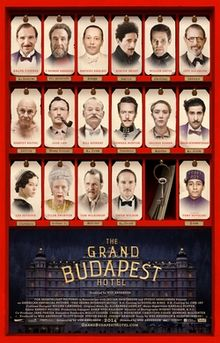
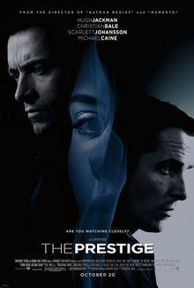
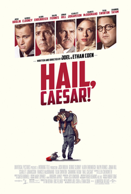

Julianne Joswiak
Student at Le Wagon
Background in Biology, interested in health tech
Linkedin
Facebook
Twitter
Goodreads
My favorite movies

Grand Budapest Hotel
The Grand Budapest Hotel is a 2014 comedy film written and directed by Wes Anderson, from a story by Anderson and Hugo Guinness, inspired by the writings of Stefan Zweig. It stars Ralph Fiennes as a concierge who teams up with one of his employees (Tony Revolori) to prove his innocence after he is framed for murder.

The Prestige
The Prestige is a 2006 mystery thriller drama film directed by Christopher Nolan, from a screenplay adapted by Nolan and his brother Jonathan from Christopher Priest's 1995 World Fantasy Award-winning novel of the same name. The story follows Robert Angier and Alfred Borden, rival stage magicians in London at the end of the 19th century. Obsessed with creating the best stage illusion, they engage in competitive one-upmanship with tragic results.

Hail, Caesar!
Hail, Caesar! is a 2016 American-British comedy film written, produced, edited and directed by Joel and Ethan Coen. The film stars Josh Brolin, George Clooney, Alden Ehrenreich, Ralph Fiennes, Jonah Hill, Scarlett Johansson, Frances McDormand, Tilda Swinton and Channing Tatum. The film is a fictional story that follows the real-life "fixer" Eddie Mannix (Brolin) working in the Hollywood film industry in the 1950s, trying to discover what happened to a cast member who vanishes during filming.
About this page
This page was coded during the
Le Wagon Full-stack developer program